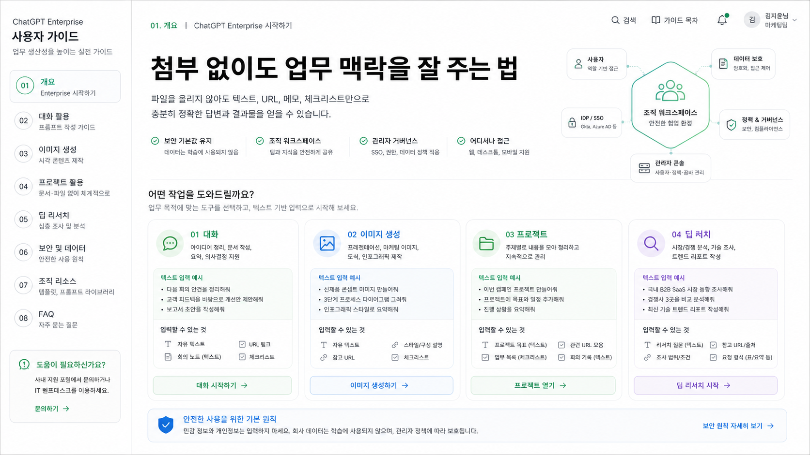

혼자 빠르게 쓰는 생산성 도구
개인 계정, 개인 결제, 개인 설정을 기준으로 Chat, 이미지 생성, 리서치, 코딩 보조를 활용합니다.
파일 첨부 불가 환경 전제
이 가이드는 사내 보안 정책상 파일 첨부를 사용할 수 없다고 가정합니다. 대신 텍스트 발췌, URL, 회의 메모, 표 일부, 체크리스트만으로 Chat, Image Generation, Projects, Deep Research를 실무에 적용하는 방법을 정리했습니다.

개인 구독 vs Enterprise
개인 구독은 개인이 결제하고 개인 계정에서 생산성을 높이는 도구입니다. Enterprise는 조직이 구매하고, 사용자를 초대하거나 프로비저닝하며, 회사의 보안과 관리 정책 안에서 ChatGPT를 쓰는 업무용 워크스페이스입니다. 파일 첨부가 불가한 환경에서도 이 차이는 그대로 남습니다.
개인 계정, 개인 결제, 개인 설정을 기준으로 Chat, 이미지 생성, 리서치, 코딩 보조를 활용합니다.
초대 또는 ID 프로비저닝으로 접근하고, 워크스페이스 정책, 보안 설정, 사용량 관리, 회사 데이터 보호 기준을 따릅니다.
Enterprise라도 사내 정책을 따라야 하지만, 개인 계정보다 업무 데이터와 팀 협업을 전제로 설계된 환경입니다.
| 구분 | 개인 구독 Plus/Pro 등 | ChatGPT Enterprise | 사용자가 기억할 점 |
|---|---|---|---|
| 가입과 소유 | 개인이 직접 가입하고 결제하며, 계정과 대화 이력도 개인 중심으로 관리합니다. | 조직이 구매하고 워크스페이스 owner/admin이 초대하거나 회사 ID 시스템으로 프로비저닝합니다. | 회사 업무는 개인 계정이 아니라 회사가 제공한 Enterprise 워크스페이스에서 시작합니다. |
| 데이터 사용 | 개인 플랜은 모델 학습 사용에 대해 옵트아웃 설정이 제공됩니다. | Enterprise는 비즈니스 데이터 보호를 전제로 하며, 회사 데이터는 기본적으로 모델 학습에 사용되지 않는 업무용 환경입니다. | 그래도 고객명, 개인정보, 미공개 수치처럼 불필요한 민감정보는 줄여서 입력합니다. |
| 보안과 로그인 | 개인 로그인과 개인 보안 설정이 중심입니다. SAML SSO, SCIM, 도메인 검증 같은 조직 기능은 개인 플랜 범위가 아닙니다. | 도메인 검증, SSO, SCIM, 중앙 멤버 관리, 사용량 인사이트 같은 조직 관리 기능을 사용할 수 있습니다. | 접속 방식, 사용 가능한 기능, 외부 앱 연결은 회사 정책에 따라 달라질 수 있습니다. |
| 협업 방식 | 개인 작업물과 개인 GPT 활용이 중심입니다. 팀 표준 템플릿이나 회사 지식 연결은 제한적입니다. | 공유 프로젝트, GPT 관리, 앱/커넥터, Company Knowledge 같은 회사 맥락 활용이 워크스페이스 정책 안에서 가능합니다. | 팀에서 반복하는 보고, 리서치, 문서 작성 방식은 프로젝트 지시문과 프롬프트 템플릿으로 맞춥니다. |
| 기능과 한도 | 개인 플랜도 이미지 생성, Deep Research, 데이터 분석, Codex 같은 고급 기능을 사용할 수 있지만 개인 사용량과 플랜 기준을 따릅니다. | 고급 도구, 더 높은 업무 사용량, 긴 컨텍스트, 회사 데이터 연결, 지원과 온보딩이 Enterprise 계약과 워크스페이스 설정에 따라 제공됩니다. | 기능이 보이지 않으면 “내 계정 문제”로 단정하지 말고 워크스페이스 설정과 좌석 유형을 먼저 확인합니다. |
파일을 못 올리더라도 Enterprise 도입의 의미는 약해지지 않습니다. 사용자는 개인 계정에 업무 내용을 흩뿌리지 않고, 회사 워크스페이스 안에서 텍스트 발췌, URL, 요약 메모, 팀 템플릿으로 안전하게 반복 업무를 처리하는 것이 핵심입니다.
공통 전제
첨부가 없을 때 결과 품질은 프롬프트 문장력보다 입력 구조에서 갈립니다. 원본 전체가 없어도 목적, 배경, 핵심 발췌, 제약, 원하는 출력, 검토 기준을 주면 충분히 실무적인 답을 얻을 수 있습니다.
긴 문서는 핵심 문단, 표 일부, 결정사항, 문제 구간만 붙여넣습니다.
접근 가능한 공개 URL과 함께 어느 부분을 봐야 하는지 적습니다.
요약문, 표, 메일 초안, 체크리스트, 리서치 보고서처럼 결과 형태를 먼저 정합니다.
정확성, 톤, 금지 표현, 보안 주의점, 다음 액션을 함께 확인하게 합니다.
기능별 페이지
각 페이지는 파일 첨부 없이 쓸 수 있는 입력 구조, 프롬프트 템플릿, 검토 체크리스트를 제공합니다. 개인 구독과 달리 Enterprise는 회사의 보안, 관리, 데이터 보호 체계 안에서 같은 도구를 함께 쓰는 환경입니다.
공통 작업 흐름
지금 필요한 결과가 요약, 초안, 비교표, 리서치, 이미지 중 무엇인지 먼저 적습니다.
파일 대신 발췌문, 회의 메모, 표 일부, 공개 URL, 본인이 정리한 배경을 넣습니다.
보안상 제외할 내용, 사용할 수 없는 자료, 대상 독자, 톤, 분량을 지정합니다.
사실, 출처, 내부 정책, 민감정보 포함 여부를 사람이 확인합니다.
잘 작동한 프롬프트는 팀 업무 템플릿으로 저장하고 같은 방식으로 재사용합니다.
사용자 관점의 안전 원칙
Enterprise는 비즈니스 데이터 보호와 조직 관리 기능을 제공하지만, 사용자는 여전히 사내 기밀, 개인정보, 고객 식별 정보, 미공개 재무 정보가 불필요하게 들어가지 않도록 확인해야 합니다.
사내 정책상 AI 도구 입력이 허용된 범위인지 먼저 확인합니다.
전체 문서 대신 필요한 문장과 수치만 축약해 넣습니다.
숫자, 법무, 재무, 인사, 고객 약속은 원문과 담당자 확인을 거칩니다.
생성 결과를 메일, 슬랙, 문서에 붙이기 전에 출처와 민감정보를 다시 확인합니다.
개발 업무 사용자를 위한 보충
Codex는 코드를 쓰고, 검토하고, 테스트하고, 배포 준비를 돕는 AI 에이전트입니다. 일반 사용자는 긴 설명 대신 목표, 저장소 위치, 수정 범위, 실행해야 할 검증 명령을 주고 결과를 확인하는 방식으로 쓰는 것이 좋습니다.
긴 작업은 한 번의 질문보다 목표와 완료 조건을 정해 맡기면 중간 상태를 이어가기 쉽습니다.
앱 화면, 에러 메시지, 재현 단계처럼 파일이 아닌 맥락도 텍스트로 구조화해 주면 품질이 올라갑니다.
웹 UI 작업은 스크린샷과 실제 렌더링 검증을 요청해 눈으로 확인 가능한 결과를 받습니다.
Active sessions에서 ChatGPT, Codex, API Platform 관련 세션을 확인하고 낯선 세션은 로그아웃합니다.
공통 프롬프트 골격
목표:
배경:
사용할 수 있는 자료:
- 텍스트 발췌:
- 참고 URL:
- 내가 요약한 맥락:
제약:
- 파일 첨부는 사용할 수 없음
- 외부 공유 금지 정보:
원하는 출력:
검토 기준:
추가 질문이 필요하면 먼저 3개 이하로 질문해줘.공식 자료